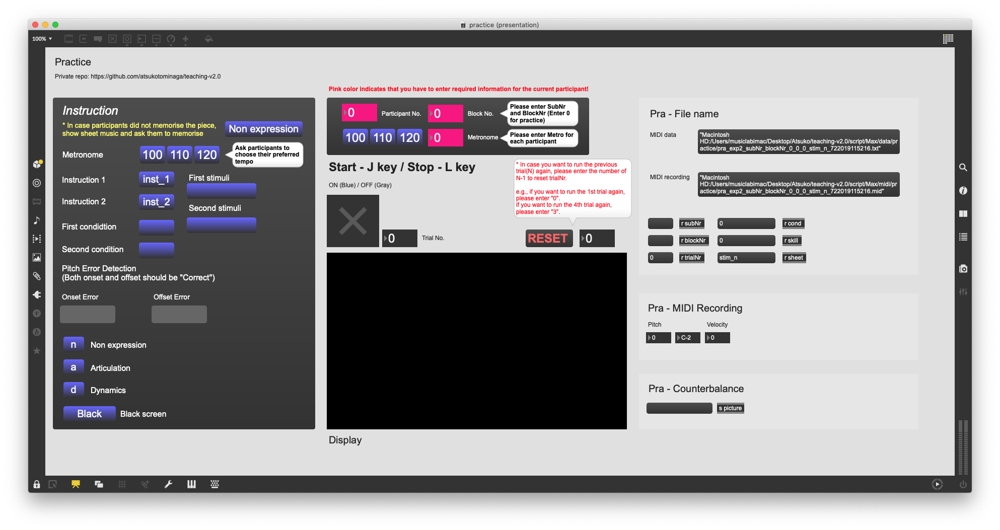
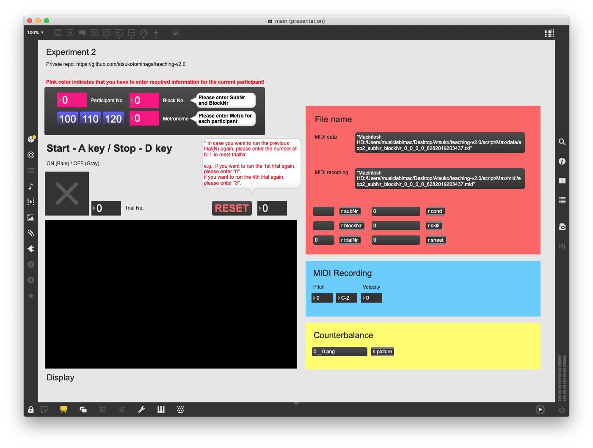
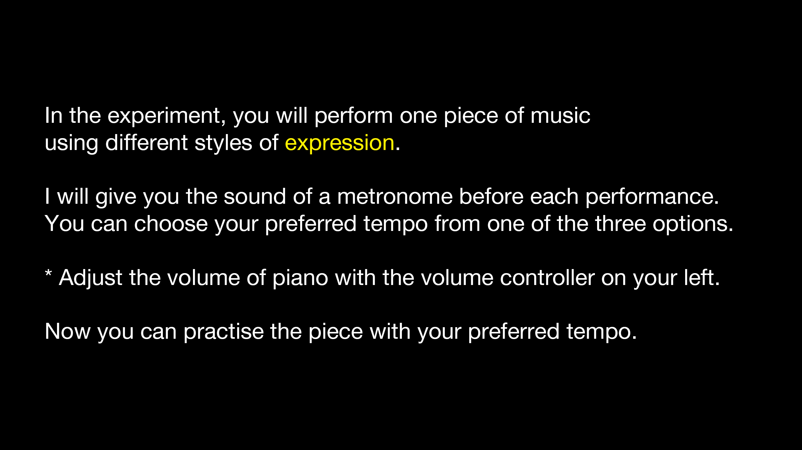
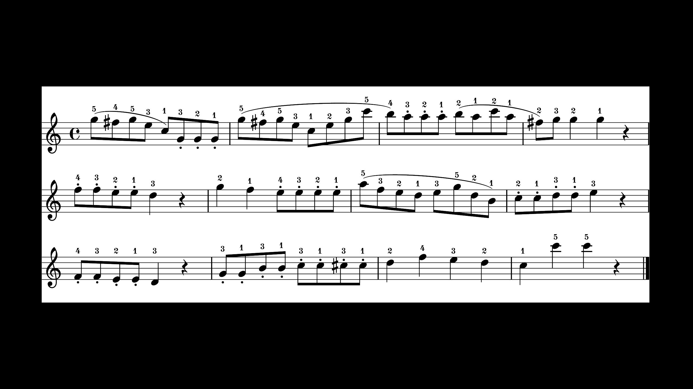

and click “Load from device”.
and click “Load from device”.Author: Atsuko Tominaga - 27/06/2019 (teaching_v2.0) - SOMBY MusicLab iMac
and click “Load from device”.


If you don’t see the images above, go to File >> Preset >> select “Analogue + Digital”. Adjust the volume of the headphone so that it sounds naturally.

The left panel indicates the procedure of the experiment. 1. For practice, click “Non expression” to display sheet music. 2. Ask participants to choose one of the preferred tempi. When you click one of the options, the sound of a metronome starts playing. 3. Enter the preferred tempo.

| Condition 1 (teaching / performing) |
|---|
| 1st Stimulus (articulation / dynamics) - Block 1 |
| 2nd Stimulus (dynamics / articulation) - Block 2 |
| Condition 2 (performing / teaching) |
|---|
| 1st Stimulus (articulation / dynamics) - Block 3 |
| 2nd Stimulus (dynamics / articulation) - Block 4 |
: What to do
Thank you for participating in the experiment. The aim of the experiment is to investigate how people play a piece of music expressively. The experiment is going to last about one hour.
If you have any questions or concerns, please ask the experimenter at any time about the nature of the study or the methods we are using. Also, you have the right to withdraw from the experiment at any time.
Before we start the experiment, please read the information sheet carefully and fill it out if you agree to take part in the study.
Collect the informed consent form
Now, you are going to play what you practised during the experiment. Before we start testing, I would like you to practise your favourite pieces / exercises so that you can get used to the digital piano. I am going to leave the room, so when you think that you can comfortably perform music with this piano, please let me know.
Experimenter should leave the room / Let participants practise their favourite pieces alone
Open practice.maxpat
Click “inst_1”

Ask participants to choose one of the favourite tempi (100, 110, 120 bpm)
In each beat, there should be two 8th notes! Please check participants understand the tempo correctly.
Please practise until you feel that you comfortably perform the piece without pitch errors. After practice, we will have a brief test to make sure you can perform the piece. Let me know when you are ready for the brief test.
Let the participant practise the piece
Click “inst_2”

Check whether he or she can produce the sound without pitch errors twice consecutively
You are now going to perform the piece in an expressive style indicated by the musical notation. I will show sheet music with the musical notation on the screen in front of you. Please read the notation and if you have any question, please ask the experimenter now.
Open practice.maxpat
Enter the block number 1 (and sheet music will be displayed)
Explain the musical notation
> Ask participants to practice until they feel they comfortably perform the piece
Definition (based on Wikipedia)

If you don’t have any question, I will give you the sound of the metronome and please perform the piece according to the notation.
Check the participant to play the piece expressively without pitch errors twice consecutively
Thank you. Do you have any questions?
Click “inst_t”

Close practice.maxpat
Open main.maxpat
1 - 8 trials
Thank you. Now, we are moving on to the different musical notation. Again, I will show sheet music with the musical notation on the screen in front of you. Please read the notation and practise it until you feel you comfortably perform the piece with the expression.
Open practice.maxpat
Enter the block number 2 (and sheet music will be displayed)
Explain the musical notation
> Ask participants to practice until they feel they comfortably perform the piece

Check the participant to play the piece expressively without pitch errors twice consecutively
Thank you. Do you have any questions?
Click “inst_t”
Close practice.maxpat
Open main.maxpat
1 - 8 trials
Thank you. Next, you will perform the same piece again but in a different condition.
You are now going to perform the piece in an expressive style indicated by the musical notation. I will show sheet music with the musical notation on the screen in front of you. Please read the notation and practise it until you feel you comfortably perform the piece with the expression.
Open practice.maxpat
Enter the block number 3 (and sheet music will be displayed)
Explain the musical notation
> Ask participants to practice until they feel they comfortably perform the piece
Check the participant to play the piece expressively without pitch errors twice consecutively
Thank you. Do you have any questions?
Click “inst_p”

Close practice.maxpat
Open main.maxpat
1 - 8 trials
Thank you. Now, we are moving on to the different musical notation. Again, I will show sheet music with the musical notation on the screen in front of you. Please read the notation and practise it until you feel you comfortably perform the piece with the expression.
Open practice.maxpat
Enter the block number 4 (and sheet music will be displayed)
Explain the musical notation
> Ask participants to practice until they feel they comfortably perform the piece
Check the participant to play the piece expressively without pitch errors twice consecutively
Thank you. Do you have any questions?
Click “inst_p”
Close pracitce.maxpat
Open main.maxpat
1 - 8 trials
Thank you. This is the end of the experiment. Lastly, could you please fill in the questionnaire?
Collect the short questionnaire
Thank you for coming today and please feel free to contact me if you have any questions about our study.